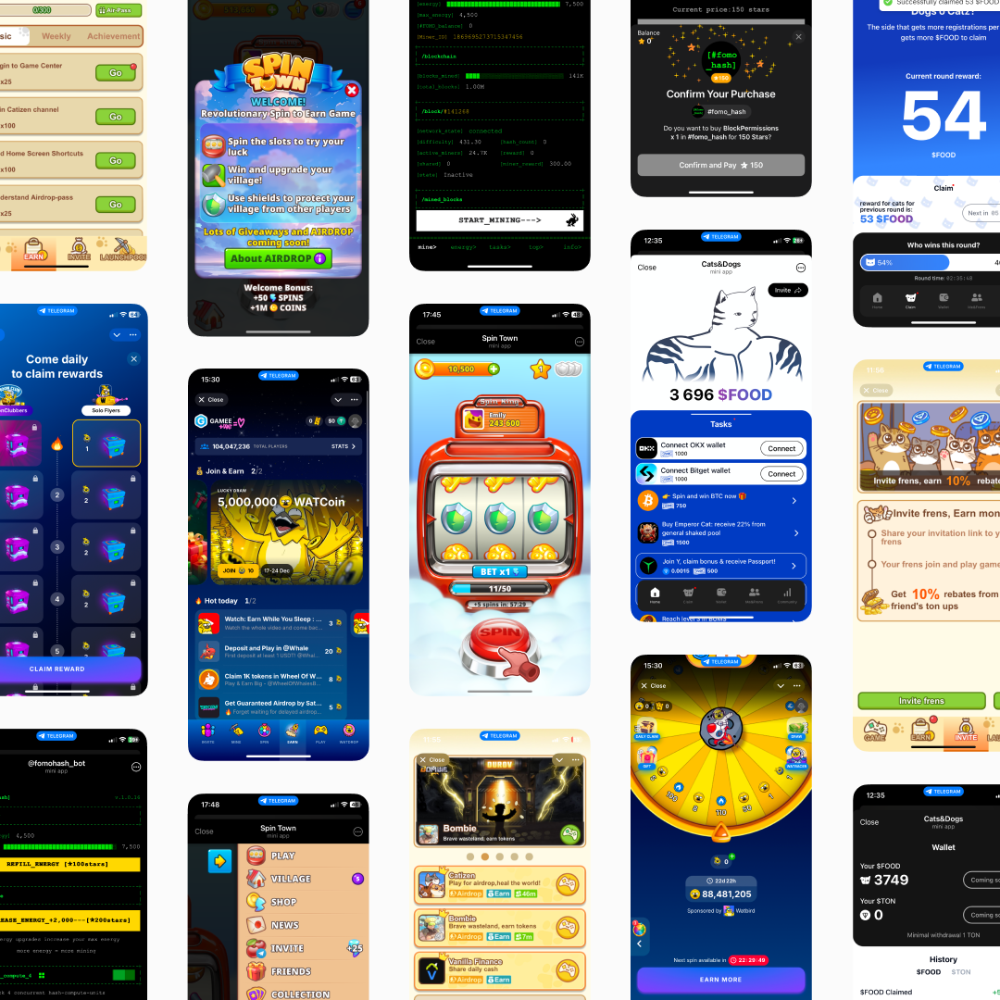
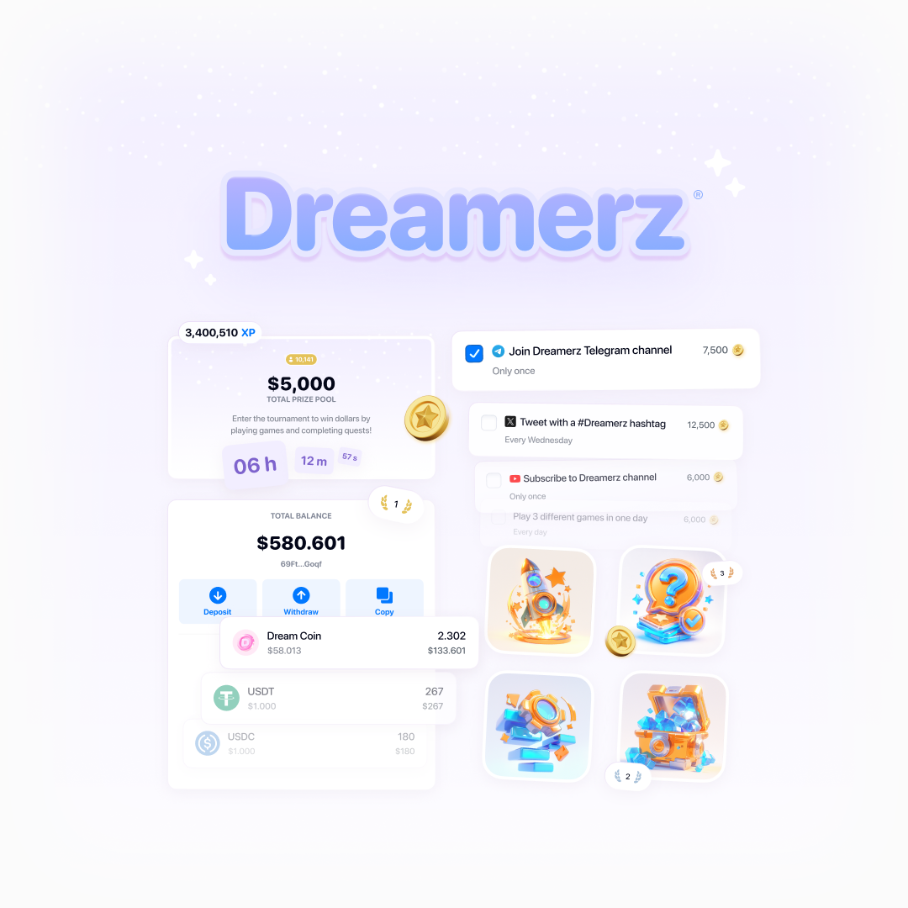
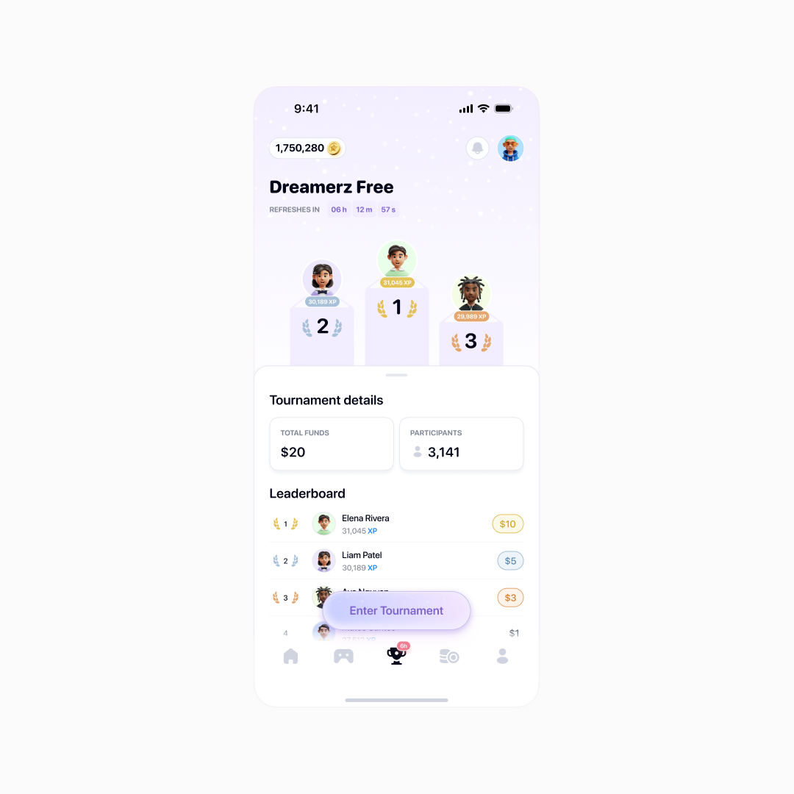
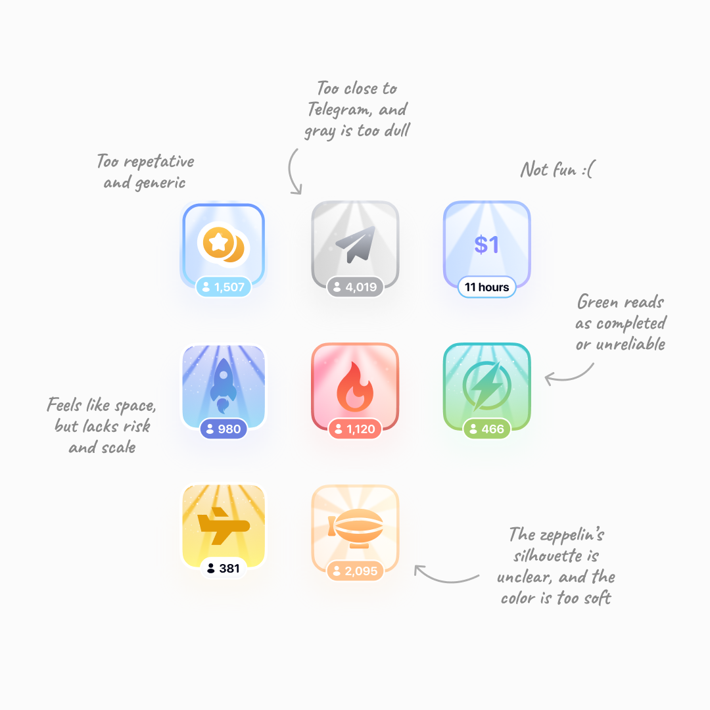
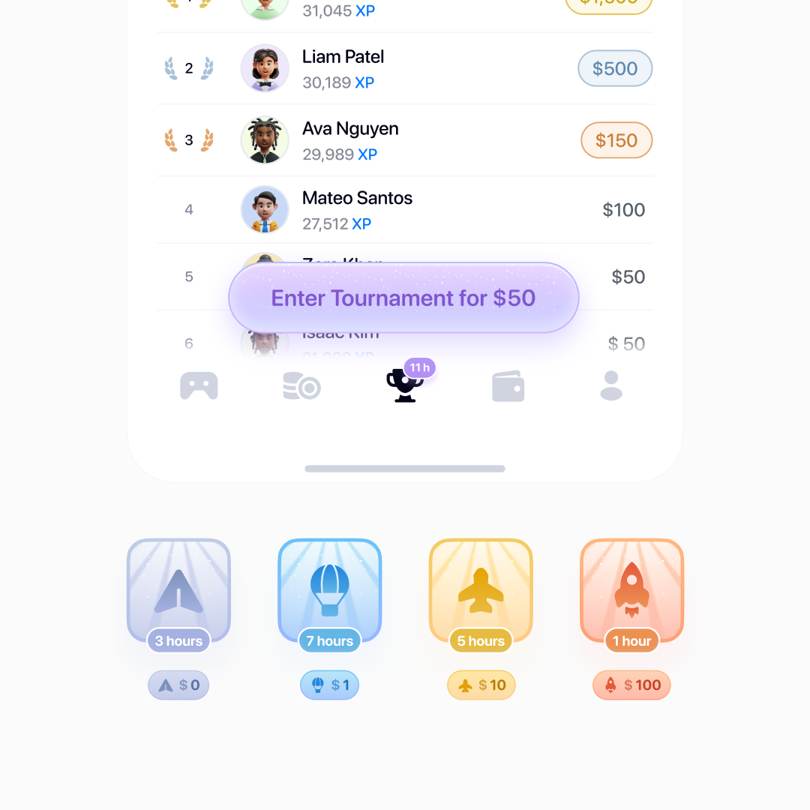
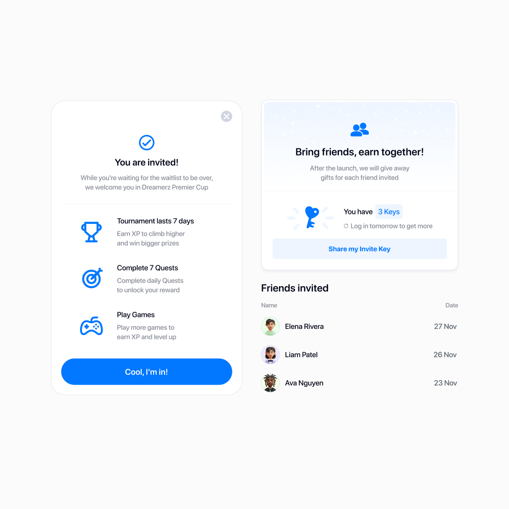
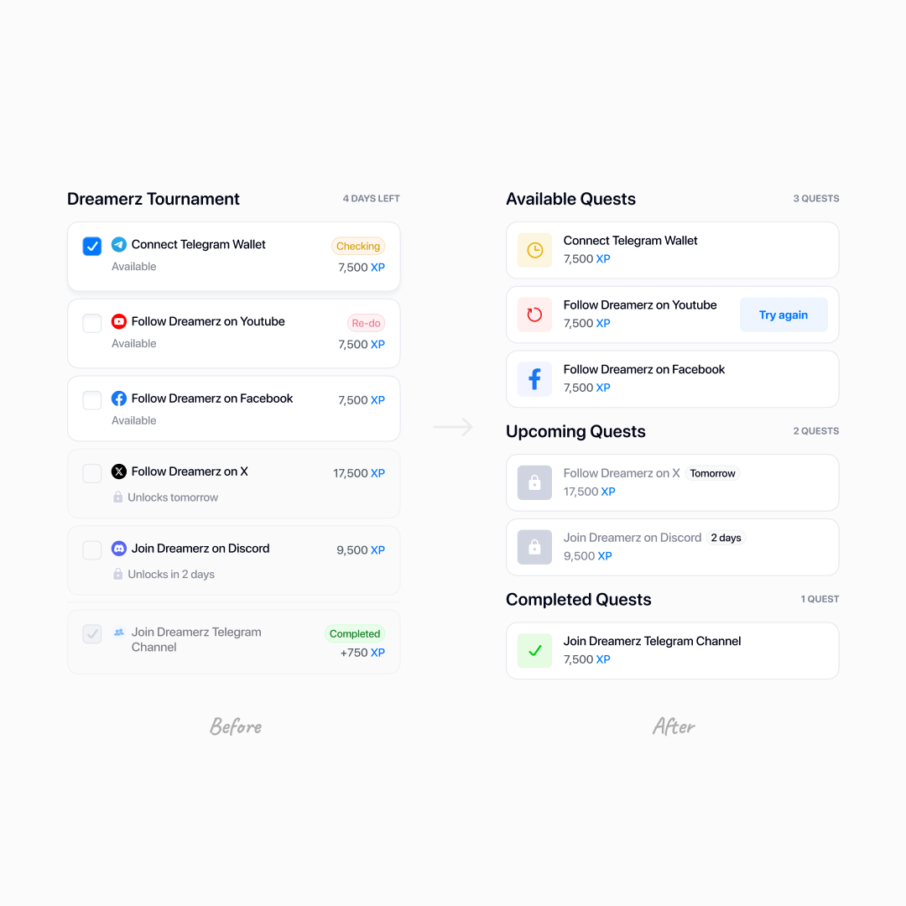
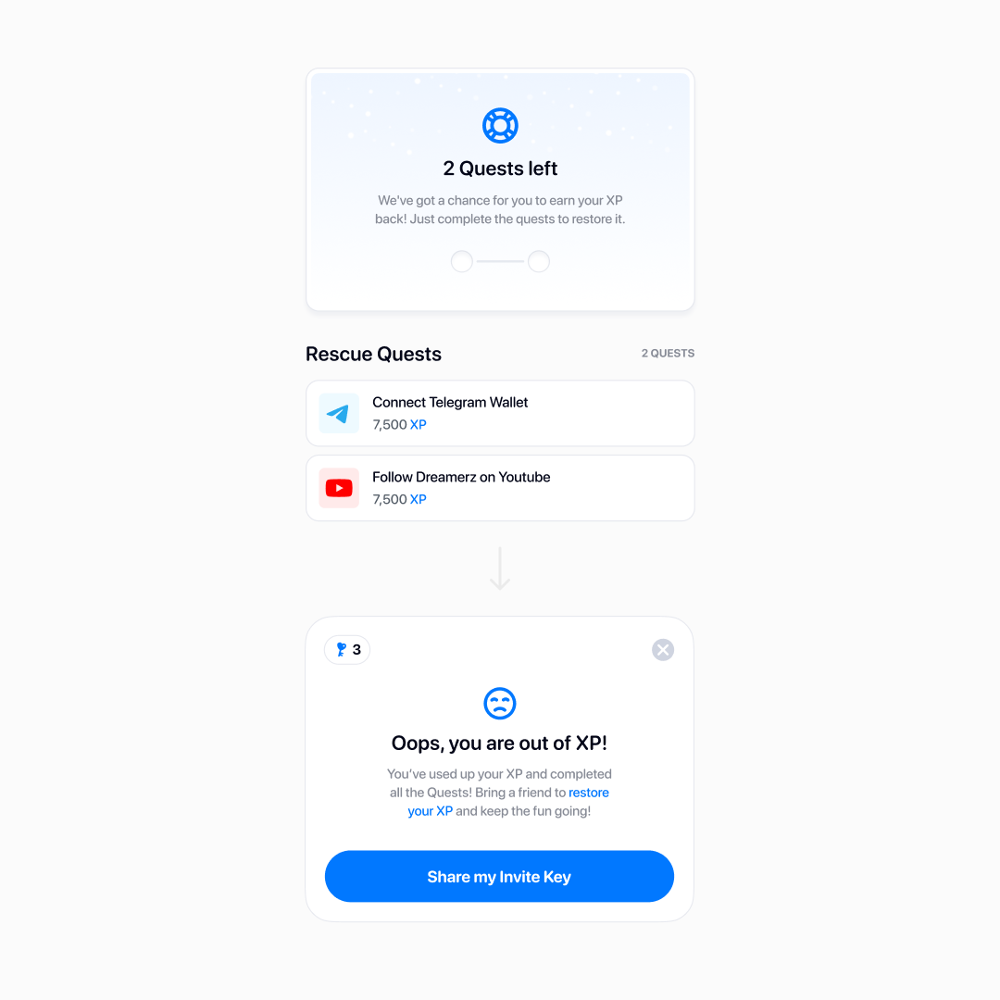
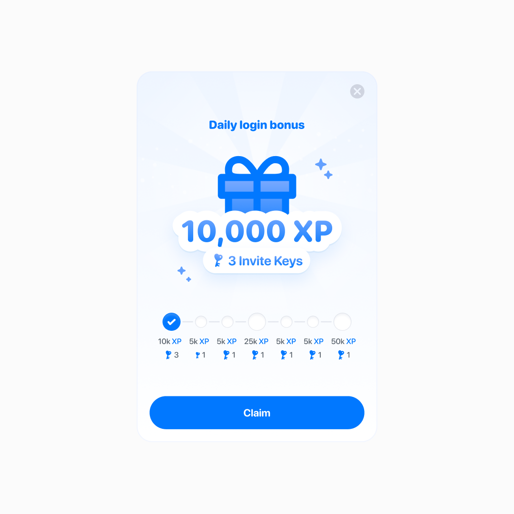
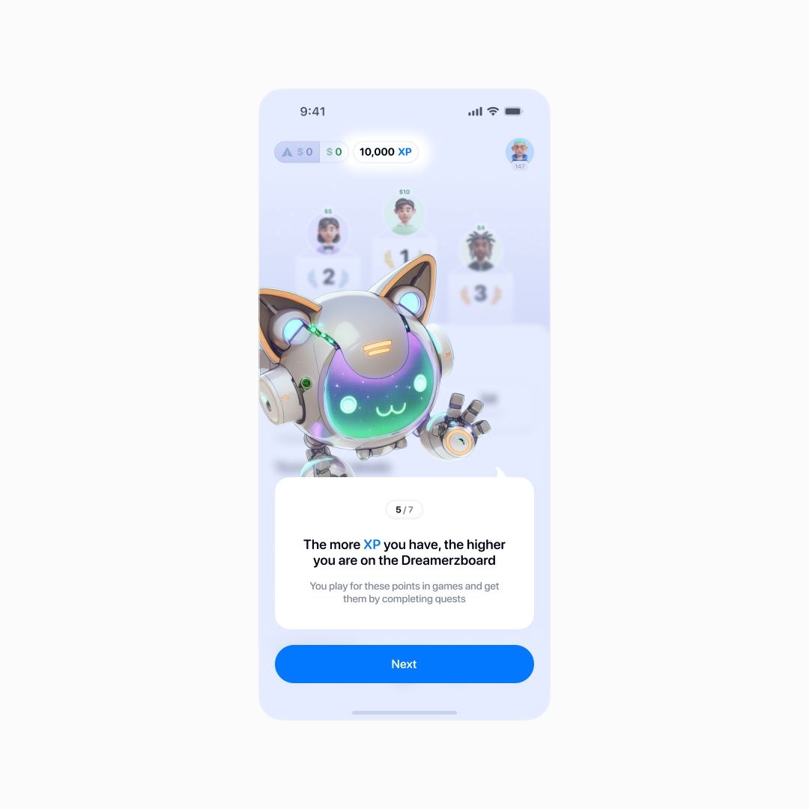

Dreamerz — building a friendly competitive app
An approachable social gaming platform with competitive mini-games, quests, and the chance to earn real rewards.
The challenge was to make leaderboards and earning mechanics feel like casual, low-pressure play for a broad audience rather than a casino-like experience — with money as a bonus, not the point.
I owned the player-facing experience from launch — helping turn that positioning into strong adoption: 70%+ day-one activation and 27,000+ active players.
Win them with the brand, keep them with the mechanics
We started with Telegram as the entry point to a full web app, largely because its newly integrated wallet took seconds to set up.
That ease was our edge — but the space we were entering looked like this:

You know the vibe: loud, intense, and full of crypto in-jokes
Early research made one thing clear: people would play, but they wouldn't stay unless the app felt trustworthy.
So I shaped the brand to feel light, calm, and approachable — with a friendly explanatory tone, soft visuals, and dreaminess over pushiness.

We created games where skill meaningfully shaped the outcome, making competition feel fairer — think a quiz.
For users who played for real rewards, their value had to feel tangible and stable — so I pushed for stablecoins, essentially dollar-pegged tokens, over volatile coins.
Still, our early adopters would be crypto-native users, while our positioning broke with category conventions. We needed something distinctive enough to win them over.
Enter tournaments
If competition drives excitement, why not make the leaderboard the heart of the platform?
Players have different goals, so we built a ladder of tournaments — some free, some paid, plus exclusive ones run by advertisers — so everyone could find their fit.
At first, joining the free tournament was a manual step. Watching Hotjar session recordings, I noticed users playing casually outside any tournament, then drifting away for good.
My hypothesis: auto-entry would fix it — drop every new player straight into the free tournament right after onboarding, no extra step. That one call kept paying off as the product grew.

Main hub for newcomers
One side effect: we dropped from two currencies to one. Previously, coins had lived outside tournaments, XP inside — auto-entry made that distinction pointless.
XP stayed for a reason, though: “coins” kept making people think they could withdraw.
Which tournament am I even in?
The MVP had one tournament, so the UI only needed two states: in or out. With five tournament types, a player could lose track — which one am I in? How much is on the line?
I tried signaling the difference through entry cost, different icons and combinations of colors.

Turns out, even the starting point and softness of an icon's light rays can affect whether users want to join
Dozens of in-depth interviews and hallway tests later, a strong metaphor emerged: flying machines, from a paper plane up to a space rocket. Exclusive tournaments got emoji instead — easy for advertisers to sign off on, and quick for us to drop in.

That's how I landed on a visual coding system: each tournament carried its own color and icon across the interface, so players could identify their tournament at a glance.
The more exclusive the tournament, the bolder its branding
The color even carries through to the win screen.
A triumphant popup makes the win feel even better and guides users onward
We saw hundreds of users start for free, then enter paid tournaments using rewards earned in-game. The free tournament was already working as a hub.
Scaling up
Interest was real, so we relaunched invite-only and kicked off a big ad campaign — wider reach, sharper focus on our most committed users.
I reimagined the existing invite-a-friend feature for the invite-only phase, and exclusivity went through the roof. We saw users sharing their invite codes on X.

Invite keys outlived the campaign — the scarcity and the metaphor made people feel more like insiders
I'd been the only product designer until now, working directly with the founders; from here we built out a full product team and new pipelines from scratch.
We were one of a kind, so borrowed solutions needed heavy adapting before we could even test them, and we were constantly talking to users, too.
Iterating on a live product
By winter we had nearly 20,000 active users and were regularly running tournaments with prize pools worth thousands of dollars. We shifted from pure growth to supporting and refining the live product.
At this scale, plenty of decisions got a second look — quests were the clearest example. I redesigned the page and rolled it out as an A/B test, tracking adoption. Quest completion increased by around 20%.

Icons and statuses unified, and the expected actions became clearer
New features also came directly from user needs. When a player ran out of XP — the points that determine their place in the tournament — we gave them a two-step path back in: first through rescue quests, and then, if those ran out too, by inviting friends.

XP is easy to lose and hard to regain, so earning it back was one of users' top requests
I also added a daily login bonus — simple gamification, but it increased how often people came back.

Longer streaks, bigger rewards — and a bigger edge in the active tournament
Outcome
After we moved out of invite-only and opened to the public, day-one activation — completing onboarding and playing at least one tournament game — held above 70%.
From that point on, in a couple of months Dreamerz reached 27,000+ active users.
That's the whole team — design, engineering, QA, marketing, and support — pulling together. And our charming mascot, too.

Auto-entry made onboarding dramatically smoother
But the thing I'm proudest of: we built a broad, mainstream audience.
Crypto audiences have telltale signs — random usernames, meme avatars and referral links in the bios. We had a few, but the overwhelming majority had real names and real photos.
In interviews they described “a cool app full of mini-games where you can actually win some money, too” — which I count as a win.
Why it ended — and what I keep
Dreamerz was live for just under a year. After a strong launch, fast growth, and long conversations with investors, the company couldn't close a deal and eventually wound down — settling up with every winner and advertiser. It wasn't a design or development failure; the business just didn't come together. That happens.
Looking back, it was the most I'd learned in a single year. The product and team were scaling faster than our processes, so I found myself continuously learning from people who had navigated similar challenges at scale.
Much of what made Dreamerz work sat outside design itself: research, planning, negotiation, and constant prioritization. That's what I'm taking with me.
…oh, and some body text really is a touch too small at 12 pt. Won't happen again.